10.1 Leçon
10.1.1 La régression linéaire
La régression linéaire simple (simple linear regression) est le cas où une variable réponse, aussi appelée variable dépendante (dependent variable), varie en fonction d’une variable explicative, aussi appelée variable indépendante (independent variable) ou prédicteur (predictor). On utilise l’appellation régression linéaire puisque la relation entre les deux variables est linéaire: on trace une droite linéaire pour représenter la relation entre les deux variables. La régression linéaire implique une relation de cause à effet. Les variations des observations de la variable réponse (variable dépendante) sont causées, du moins en partie, par une variable explicative (variable indépendante).
10.1.1.1 Équation de régression
On peut représenter l’équation de la droite de régression linéaire comme suit :
\[y_i = a + bx_i + \epsilon_i\]
où \(y_i\) correspond à l’observation \(i\) de la variable réponse \(y\), \(a\) correspond à l’ordonnée à l’origine (intercept). L’ordonnée à l’origine représente le point sur l’axe des y’s qui est croisé par la droite de régression. Le terme \(b\) correspond à l’estimation de la pente, qui indique le taux d’accroissement de \(y\) avec une augmentation d’une unité de la variable explicative \(x\). Le terme \(x_i\) correspond à l’observation \(i\) de la variable explicative \(x\), et \(\epsilon_i\) correspond au terme d’erreur associé à l’estimation de l’observation \(y_i\). Une notation équivalente utilise des termes \(\beta\), tels que :
\[y_i = \beta_0 + \beta_{x} x_i + \epsilon_i\]
où \(\beta_0\) représente l’ordonnée à l’origine et \(\beta_{x}\) indique la pente de la variable explicative \(x\). C’est cette dernière notation que nous utiliserons dans cette leçon. De manière générale, on emploie le terme générique coefficient pour désigner \(\beta_0\), \(\beta_{x}\), \(a\) et \(b\). Ces coefficients représentent l’estimation de paramètres de la population (parameter estimate) pour désigner la valeur numérique de l’ordonnée à l’origine et de la pente. Le prochain exemple présente un jeu de données typique sur lequel on peut réaliser une régression linéaire.
Nous nous intéressons au pouvoir des campagnes publicitaires lorsqu’elles utilisent principalement des “influenceurs” ou “influenceuses” du web, c.-à-d. des personnes très influentes sur les réseaux sociaux qui font du placement de produit à travers leurs vidéos ou leurs photos. Plus spécifiquement, nous voulons décrire le facteur d’augmentation des ventes de divers produits cosmétiques suite à une campagne publicitaire faisant appel à un nombre plus ou moins grands d’influenceurs ayant chacun au moins 20 000 abonnés sur ses plateformes. Le jeu de données est contenu dans le fichier influenceurs.csv.
##on importe les données
influenceurs <- read.table(file = "Module_10/data/influenceurs.csv", sep = '\t',
header = TRUE)
head(influenceurs)## Nombre Facteur
## 1 3 1.4
## 2 4 3.1
## 3 5 2.2
## 4 6 2.4
## 5 8 3.6
## 6 9 3.2La figure 10.1 illustre les données. On remarque déjà un patron linéaire et la droite de régression décrira formellement cette relation.
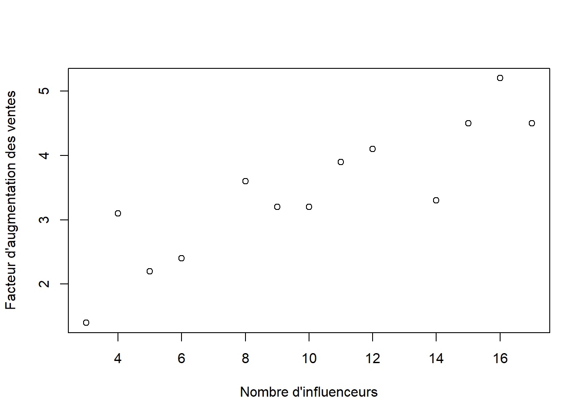
Figure 10.1: Augmentation des ventes de divers produits cosmétiques en fonction du nombre d’influenceurs participant à la campagne publicitaire de ces nouveaux produits.
10.1.1.2 Estimation
La régression linéaire minimise la somme des carrés des erreurs (\(SSE\))28 par la méthode des moindres carrés pour obtenir les estimations de l’ordonnée à l’origine et de la pente. Autrement dit, pour un jeu de données, l’équation de régression est l’équation qui donne la plus faible distance verticale entre chaque point (\(y_i\)) et la droite de régression (\(\hat{y}_i\)). Pour des problèmes plus complexes, comme la régression multiple que nous ne verrons pas dans le cours, les paramètres sont estimés à l’aide d’algèbre matricielle.
On peut calculer différentes sommes des carrés à partir des données de la régression linéaire, un peu comme nous l’avons effectué pour l’ANOVA. Les prochaines lignes montrent les sommes des carrés qui nous permettront d’obtenir les estimations des paramètres (variance résiduelle et coefficients de régression) à l’aide de la méthode des moindres carrés.
La somme des carrés des erreurs (\(SSE\)) donne la somme des carrés de la déviation entre les valeurs observées de la variable dépendante (\(y_i\)) et les valeurs prédites (\(\hat{y}_i\)) par l’équation de régression :
\[ SSE = \sum_{i=1}^n (y_i - \hat{y_i})^2\]
La somme des carrés totale de \(Y\) (\(SSY\)) donne la somme des carrés de la déviation entre les valeurs observées de la variable dépendante (\(y_i\)) et la moyenne de cette variable (\(\bar{y}\))
\[SSY = \sum_{i=1}^n (y_i - \bar{y})^2\]
La somme des carrés totale de \(X\) (\(SSX\)) donne la somme des carrés de la déviation entre les valeurs observées de la variable explicative (\(x_i\)) et la moyenne de cette variable (\(\bar{x}\)) :
\[SSX = \sum_{i=1}^n (x_i - \bar{x})^2\]
La somme des produits croisés (\(SSXY\), sum of cross products) donne la somme du produit des déviations entre la variable dépendante et sa moyenne et des déviations entre la variable explicative et sa moyenne :
\[SSXY = \sum_{i=1}^n (x_i - \bar{x})(y_i - \bar{y})\] À partir de ces valeurs, nous pouvons obtenir la somme des carrés de la régression (\(SS_{\mathrm{r\acute{e}gression}}\)) :
\[SS_{\mathrm{r\acute{e}gression}} = \frac{SSXY^2}{SSX}\]
La somme des carrés totale de \(Y\) (\(SSY\)), la somme des carrés de la régression (\(SS_{\mathrm{r\acute{e}gression}}\)) et la somme des carrés des erreurs (\(SSE\)) sont reliées par la relation suivante :
\[SSE = SSY - SS_{\mathrm{r\acute{e}gression}}\]
La pente (\(b\), \(\beta_{x}\)) s’obtient :
\[\beta_{x} = \frac{SSXY}{SSX}\] Puisque la droite de régression passe par le point \(\bar{y}\) et \(\bar{x}\), on peut trouver l’ordonnée à l’origine (\(a\), \(\beta_0\)) :
\[\bar{y} = \beta_0 + \beta_{x}\bar{x} \] \[\bar{y} - \beta_{x}\bar{x} = \beta_0 \] \[\beta_0 = \bar{y} - \beta_{x}\bar{x} \]
Tout comme avec l’ANOVA, on peut estimer la variance résiduelle (\(\sigma^2\)) à l’aide du carré moyen des erreurs (\(MSE\)), où la variance résiduelle correspond à la partie de la variance des observations de \(y\) qui n’est pas expliquée par \(x\):
\[MSE = \frac{SSE}{n - 2}\]
Appliquons maintenant ces calculs à l’exemple du placement de produits par des influenceurs.
Nous allons estimer le facteur d’augmentation des ventes à partir des équations vues dans la section précédente.
La somme des carrés de \(Y\) :
\[\begin{align*} SSY &= \sum_{i=1}^n (y_i - \bar{y})^2 \\ SSY &= (1.4 - 3.4)^2 + \ldots + (4.5 - 3.4)^2 \\ SSY &= 13 \end{align*}\]
La somme des carrés de \(X\) :
\[\begin{align*} SSX &= \sum_{i=1}^n (x_i - \bar{x})^2 \\ SSX &= (3 - 10)^2 + \ldots + (17 - 10)^2 \\ SSX &= 262 \end{align*}\]
La somme des produits croisés :
\[\begin{align*} SSXY &= \sum_{i=1}^n (x_i - \bar{x})(y_i - \bar{y}) \\ SSXY &= (1.4 - 3.4)(3 - 10) + \ldots \\ &\quad + (4.5 - 3.4)(17 - 10) \\ SSXY &= 51.1 \end{align*}\]
La somme des carrés de la régression :
\[\begin{align*} SS_{\mathrm{r\acute{e}gression}} &= \frac{SSXY^2}{SSX} \\ SS_{\mathrm{r\acute{e}gression}} &= \frac{51.1^2}{262} \\ SS_{\mathrm{r\acute{e}gression}} &= 10 \end{align*}\]
La somme des carrés des erreurs :
\[\begin{align*} SSE &= SSY - SS_{\mathrm{r\acute{e}gression}} \\ SSE &= 13 - 10 \\ SSE &= 3 \end{align*}\]
Nous pouvons ensuite calculer la pente de la droite de régression :
\[\begin{align*} \beta_x &= \frac{SSXY}{SSX} \\ \beta_x &= \frac{51.1}{262} \\ \beta_x &= 0.2 \end{align*}\]
L’ordonnée à l’origine s’obtient comme suit :
\[\begin{align*} \beta_0 &= \bar{y} - \beta_x \bar{x} \\ \beta_0 &= 3.4 - 0.2 \times 10 \\ \beta_0 &= 1.5 \end{align*}\]
Et la variance résiduelle est donnée par :
\[\begin{align*} MSE &= \frac{SSE}{n - 2} \\ MSE &= \frac{3.1}{13 - 2} \\ MSE &= 0.3 \end{align*}\]
Nous pouvons réaliser rapidement tous ces calculs en appliquant les formules dans R ou encore en utilisant directement la fonction lm( ) :
##on crée des objets pour stocker chaque variable
nombre <- influenceurs$Nombre
facteur <- influenceurs$Facteur
##SSY
SSY <- sum((facteur - mean(facteur))^2)
SSY## [1] 13.04769## [1] 262## [1] 51.1## [1] 9.96645## [1] 3.081242## [1] 0.1950382## [1] 1.480388## [1] 0.2801129##
## Call:
## lm(formula = Facteur ~ Nombre, data = influenceurs)
##
## Coefficients:
## (Intercept) Nombre
## 1.480 0.195##SSE à partir des valeurs prédites
##fitted() utilise l'objet m1 (résultat du modèle)
##et retourne les valeurs prédites pour chaque
##ligne du jeu de données influenceurs
SSE <- sum((facteur - fitted(m1))^2)
SSE## [1] 3.081242En assemblant les coefficients de régression, nous obtenons l’équation de régression linéaire suivante: \[y_i = \beta_0 + \beta_xx_i + \epsilon_i\] \[y_i = 1.5 + 0.2Nombre_i + \epsilon_i\]
À noter que les valeurs prédites (\(\hat{y}_i\)) sont obtenues avec \(1.5 + 0.2Nombre_i\). Par exemple, nous avons observé un facteur d’augmentation des ventes de 1.5 avec 3 influenceurs participant à une campagne publicitaire. Nous pouvons calculer le facteur d’augmentation prédit par la régression (c.-à-d., \(\hat{y}_i\) avec 3 influenceurs) :
\[\hat{y}_1 = 1.5 + 0.2 \cdot 3 \\ = 2.1 \]
On peut procéder de la même façon pour calculer les autres valeurs prédites. Finalement, on ajoute la droite de régression sur le graphique présentant le facteur d’augmentation des ventes en fonction du nombre d’influenceurs (Figure 10.2a).
par(mfrow = c(1, 2), cex = 1.2)
##graphique 1
plot(influenceurs$Facteur ~ influenceurs$Nombre,
ylab = "Facteur d'augmentation des ventes",
xlab = "Nombre d'influenceurs")
##ajout de la droite de régression
abline(m1)
text(x = 4, y = 5, labels = "a")
##graphique 2
plot(influenceurs$Facteur ~ influenceurs$Nombre,
ylab = "Facteur d'augmentation des ventes",
xlab = "Nombre d'influenceurs")
abline(m1)
segments(x0 = nombre, y0 = facteur, x1 = nombre, y1 = fitted(m1), col = "blue")
text(x = 4, y = 5, labels = "b")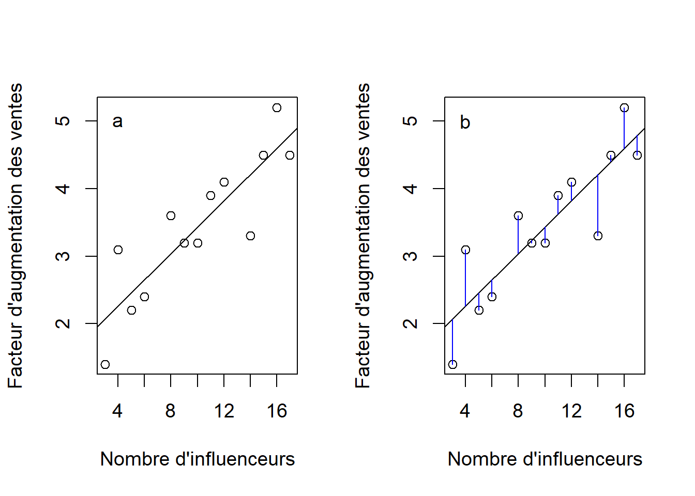
Figure 10.2: Droite de régression linéaire du facteur d’augmentation des ventes en fonction du nombre d’influenceurs (a) et distance entre les observations (\(y_i\)) et la valeur prédite correspondante (\(\hat{y_i}\)) (b).
Puisque les erreurs (\(\epsilon_i\)) correspondent aux résidus, on peut réécrire:
\[y_i = \hat{y_i} + \epsilon_i\] \[y_i - \hat{y_i} = \epsilon_i \] \[\epsilon_i = y_i - \hat{y_i}\]
La droite de régression minimise la somme des carrés des erreurs qui dépend directement de la distance (verticale) entre chaque \(y_i\) et sa valeur prédite \(\hat{y_i}\) correspondante (Figure 10.2b). Dans R, on peut extraire les résidus du modèle de régression à l’aide de la fonction residuals( ) en fournissant comme argument l’objet qui contient le résultat du modèle (c.-à-d., m1 dans notre exemple), alors que la fonction fitted( ) extrait les valeurs prédites du modèle. Nous utiliserons ces deux éléments pour vérifier les suppositions de la régression linéaire.
10.1.1.3 Suppositions
La régression linéaire comporte les suppositions suivantes :
- existence: à chaque valeur de \(x\), il existe une distribution de valeurs de \(y\) dans la population. Cette supposition ne peut être vérifiée formellement, mais implique qu’il y a une série de valeurs de \(y\) possibles à chaque valeur de \(x\);
- normalité: les erreurs proviennent d’une distribution normale. Cette supposition peut être vérifiée à l’aide d’un graphique quantile-quantile à partir des résidus;
- homoscédasticité: la variance de \(y\) (et des erreurs) est la même pour chaque \(x\). Le graphique des résidus en fonction des valeurs prédites permet de diagnostiquer des problèmes associés à l’hétérogénéité de la variance;
- indépendance: es valeurs de \(y\) (et les erreurs) sont indépendantes les unes des autres. L’échantillonnage aléatoire des observations assure l’indépendance des observations et des erreurs;
- linéarité: la relation entre \(y\) et \(x\) est linéaire. La régression linéaire implique une relation linéaire: un graphique des valeurs observées (\(y\)) en fonction de la variable explicative (\(x\)) permet de vérifier la plausibilité de cette supposition. Si la relation n’a pas une forme linéaire (une relation exponentielle par exemple), on peut considérer une transformation afin de linéariser la relation29.
- mesure de \(x\) sans erreur: les valeurs de \(x\) sont mesurées sans erreur. Un assouplissement de cette supposition consiste à supposer que l’erreur sur \(x\) est très faible par rapport à l’erreur de mesure de \(y\). La prévention et la rigueur dans la prise de mesure permet de satisfaire à cette condition.
Poursuivons le développement de l’exemple sur l’augmentation des ventes suite à une campagne publicitaire avec des influenceurs du web en vérifiant les suppositions pour la régression linéaire. Nous pouvons vérifier l’homogénéité des variances et la normalité à l’aide des mêmes outils que pour l’ANOVA.
par(mfrow = c(1, 2), cex = 1.2)
##homogénéité de la variance
plot(residuals(m1) ~ fitted(m1), ylab = "Résidus",
xlab = "Valeurs prédites",
main = "Homogénéité des variances", cex.main = 1)
##normalité
text("a", x= 2.3, y = 0.7, cex = 1.2)
qqnorm(residuals(m1), ylab = "Quantiles observés",
xlab = "Quantiles théoriques",
main = "Normalité des résidus", cex.main = 1)
qqline(residuals(m1))
text("b", x= -1.4, y = 0.7, cex = 1.2)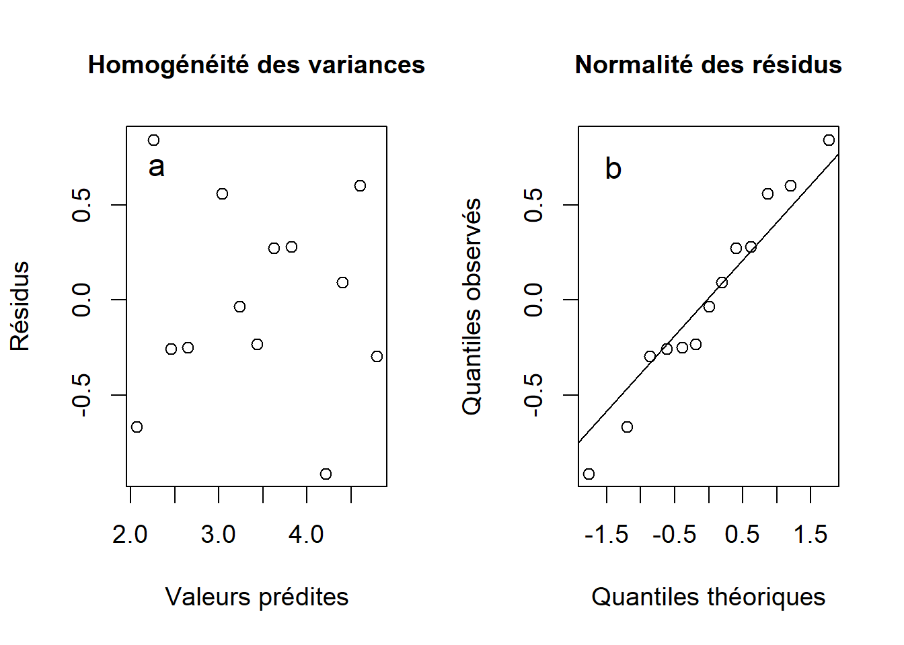
Figure 10.3: Homogénéité des variances (a) et normalité des résidus (b) obtenus à partir de la droite de régression linéaire du facteur d’augmentation des ventes en fonction du nombre d’influenceurs faisant campagne pour le produit.
La figure 10.3a montre que les variances sont homogènes. Comme pour l’ANOVA, la suppositon d’homogénéité des variances doit être respectée. Bien que quelques résidus dévient de la normalité (10.3b), la régression linéaire est appropriée. Nous pouvons procéder à l’interprétation de la régression.
10.1.1.4 Valeurs extrêmes
Une observation qui se démarque du reste des observations est une observation extrême (outlier). Cette caractéristique d’une observation peut entraîner des problèmes d’estimation. La présence d’une valeur extrême dans une variable peut fortement influencer la moyenne arithmétique de cette même variable. Par exemple, dans un vecteur avec les 5 valeurs suivantes \(0.1, 0.1, 0.2, 0.2, 0.3\), nous obtenons une moyenne arithmétique de 0.18. Si on remplace la valeur de 0.3 par 30, la moyenne deviendra 6.12 et très différente de la moyenne originale. Le même phénomène se produit avec la régression.
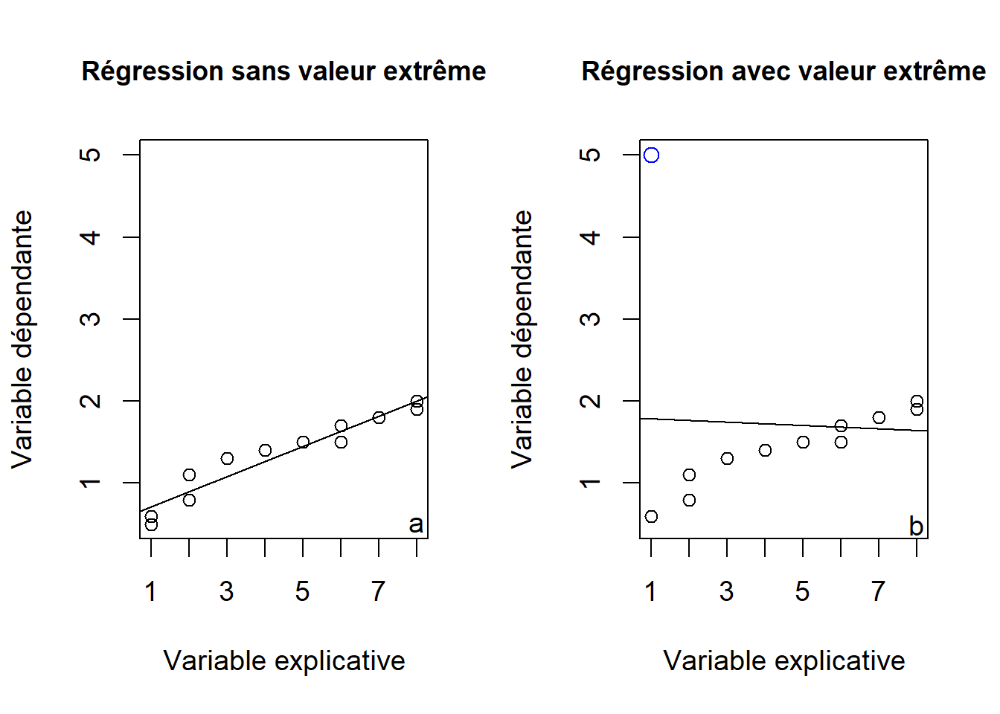
Figure 10.4: Régression sans valeur extrême (a) où la pente est de 0.195 et (b) régression avec les mêmes données sauf pour une observation extrême identifiée en bleu (\(x\) = 1, \(y\) = 5) qui modifie la pente à la valeur -0.021.
10.1.1.4.1 Résidus de Student
Les résidus de Student (Student residuals) permettent d’identifier des valeurs extrêmes dans une régression. Pour ce faire, chaque observation est comparée aux autres au moyen d’une variable binaire qui prend la valeur de 1 pour coder cette observation et de 0 pour les autres valeurs. Cette nouvelle variable est ajoutée à la régression et le test \(t\) associé à ce coefficient donne le résidu de Student pour cette observation. La fonction rstudent( ) extrait directement ces valeurs. Le code ci-dessous montre l’extraction des résidus de Student pour les deux premières observations.
##on crée une variable binaire pour obs1
influenceurs$obs1 <- ifelse(rownames(influenceurs) == "1", 1, 0)
##on crée une variable binaire pour obs2
influenceurs$obs2 <- ifelse(rownames(influenceurs) == "2", 1, 0)
##on ajoute cette variable à la régression
m1.obs1 <- lm(Facteur ~ Nombre + obs1, data = influenceurs)
m1.obs2 <- lm(Facteur ~ Nombre + obs2, data = influenceurs)
summary(m1.obs1)$coef## Estimate Std. Error t value Pr(>|t|)
## (Intercept) 1.7915038 0.3919162 4.571140 0.0010244634
## Nombre 0.1708815 0.0344507 4.960176 0.0005698837
## obs1 -0.9041484 0.5804032 -1.557794 0.1503394339## Estimate Std. Error t value Pr(>|t|)
## (Intercept) 1.1535127 0.35523771 3.247157 8.762565e-03
## Nombre 0.2195067 0.03129716 7.013631 3.655048e-05
## obs2 1.0684604 0.52727435 2.026384 7.022757e-02## 1 2
## -1.557794 2.026384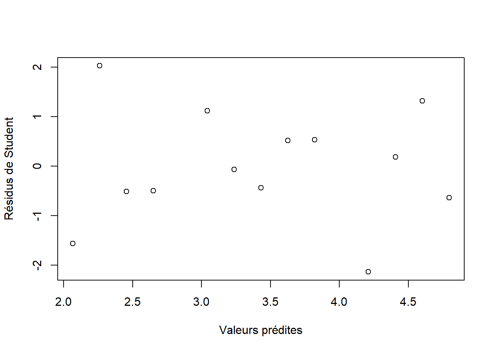
Figure 10.5: Résidus de Student en fonction des valeurs prédites de la régression de l’augmentation des ventes en fonction du nombre d’influenceurs du web participant à la campagne publicitaire.
Puisque les résidus de Student sont sur l’échelle du \(t\) de Student, des valeurs supérieures à 4 ou inférieures à -4 indiquent des valeurs qui se démarquent nettement des autres (voir la leçon 2). On peut visualiser rapidement les résidus de Student en fonction des valeurs prédites (fig. 10.5).
10.1.1.5 Tests d’hypothèses
Nous pouvons tester une série d’hypothèses statistiques à partir de la régression linéaire, notamment des tests d’hypothèses sur les coefficients ainsi que sur la régression. La fonction summary( ) permet d’obtenir un bref résumé de l’analyse et le résultat de ces tests d’hypothèses. Nous utilisons cette fonction afin d’aller chercher le résumé de l’analyse réalisée plus tôt sur l’augmentation des ventes suite à du placement de produit fait par des influenceurs sur le web :
##
## Call:
## lm(formula = Facteur ~ Nombre, data = influenceurs)
##
## Residuals:
## Min 1Q Median 3Q Max
## -0.91092 -0.25558 -0.03573 0.27915 0.83946
##
## Coefficients:
## Estimate Std. Error t value Pr(>|t|)
## (Intercept) 1.4804 0.3584 4.130 0.00167 **
## Nombre 0.1950 0.0327 5.965 9.39e-05 ***
## ---
## Signif. codes: 0 '***' 0.001 '**' 0.01 '*' 0.05 '.' 0.1 ' ' 1
##
## Residual standard error: 0.5293 on 11 degrees of freedom
## Multiple R-squared: 0.7638, Adjusted R-squared: 0.7424
## F-statistic: 35.58 on 1 and 11 DF, p-value: 9.388e-05Nous remarquons différents éléments dans les résultats de summary( ), incluant l’appel à la fonction (Call:), les quantiles des résidus (Residuals), suivi des coefficients de la régression (Coefficients). Pour chaque coefficient de régression, on retrouve quatre colonnes. La première colonne présente l’estimation (Estimate) et la deuxième donne l’erreur-type de l’estimation (Std. Error). La troisième colonne correspond à un test d’hypothèse sur l’estimation, à savoir, si sa valeur diffère significativement de 0 (\(H_0: \beta = 0\)). Cette hypothèse est testée à l’aide d’un test \(t\) de Wald, un test qui est formé de l’estimation divisée par son erreur-type (\(t \: \mathrm{de} \: \mathrm{Wald} = \frac{\beta}{SE_{\beta}}\)). La quatrième colonne correspond à la probabilité cumulative associée à un test \(t\) pour l’hypothèse nulle sur l’estimation et aux degrés de liberté résiduels du modèle (\(P(t_{df} \geq |t_{obs, df}|)\)). À noter qu’on teste rarement si l’ordonnée à l’origine diffère de 0 (1ère rangée), puisque l’ordonnée à l’origine diffère la plupart du temps de 0 (2e rangée). C’est pourquoi on se limite généralement à tester la pente.
La dernière portion des résultats indique l’erreur-type résiduelle (\(\sqrt{MSE}\)), les degrés de liberté résiduels du modèle de régression, ainsi le coefficient de détermination (\(R^2\)) qui est une mesure de la force de la régression que nous verrons dans la prochaine section. La dernière ligne nous présente le \(F\) sur l’ANOVA de la régression et la probabilité cumulative de cette statistique. Ce test détermine si globalement la portion de la variance expliquée par la variable explicative est supérieure à la portion inexpliquée (variance résiduelle, \(MSE\)). %Ce test amène peu d’information additionnelle pour la régression linéaire simple, puisque le test-\(t\) de Wald nous informe rapidement de l’importance du coefficient. C’est avec la régression multiple que ce résultat amène le plus d’information.
Une alternative aux tests d’hypothèses classiques s’avère l’usage d’intervalles de confiance afin d’évaluer l’effet de l’estimation de la pente. La construction d’un intervalle de confiance autour d’une estimation est similaire à celle autour d’une moyenne d’un échantillon. On calculera l’intervalle de confiance à \(1 - \alpha \: \%\) comme suit :
\[IC \: \text{à} \: 1 - \alpha \: \%: \\ P(\beta_{x} - t_{\alpha/2, \: \mathrm{degr\acute{e}s \: de \: libert\acute{e} \: r\acute{e}siduels}} \cdot SE_{\beta_x} \leq \mu \leq \beta_{x} + t_{\alpha/2, \: \mathrm{degr\acute{e}s \: de \: libert\acute{e} \: r\acute{e}siduels}} \cdot SE_{\beta_x}) = (1 - \alpha)\]
où \(\beta_x\) représente l’estimation de la pente, \(SE_{\beta_x}\) donne la précision de cette estimation et \(t_{\alpha/2, \: \mathrm{degr\acute{e}s \: de \: libert\acute{e} \: r\acute{e}siduels}}\) correspond à la statistique du \(t\) de Student associée à la portion \(\alpha/2\) % de la courbe et aux degrés de libertés résiduels. Ainsi, si l’intervalle de confiance exclut 0, nous déclarerons que l’estimation du coefficient diffère de 0. En poursuivant l’exemple de régression linéaire l’augmentation des ventes de produits avec une campagne publicitaire d’influenceurs du web, nous obtenons un intervalle de confiance à 95 % autour de la pente de \([-0.264, -1.486]\) et nous concluons que l’estimation diffère de 0.
##extraction de pente
pente <- coef(m1)[2]
##extraction de SE de la pente
##à partir du summary() du modèle m1
SE.pente <- summary(m1)$coefficient[2,2]
##df résiduels
df.res <- m1$df.residual
##limites de IC
inf95 <- pente + qt(p = 0.025, df = df.res) * SE.pente
sup95 <- pente - qt(p = 0.025, df = df.res) * SE.pente
##IC
c(inf95, sup95)## Nombre Nombre
## 0.1230712 0.267005110.1.1.6 Évaluer le pouvoir prédictif
Le coefficient de détermination ou \(\boldsymbol{R^2}\) est une mesure de la force de la régression. Elle indique si les observations sont près de la droite de régression. Le coefficient de détermination peut prendre des valeurs entre 0 (la régression n’explique aucune partie de la variance de \(y\)) et 1 (la régression explique complètement la variance de \(y\)). En multipliant le coefficient de détermination par 100, on peut l’interpréter comme un pourcentage de variance de la variable réponse (\(y\)) expliquée par la variable explicative (\(x\)). Le coefficient de détermination peut se calculer:
\[ R^2 = \frac{SSReg}{SSY}\]
où \(SSReg\) correspond à la somme des carrés de la régression et \(SSY\) correspond à la somme des carrés totale de \(y\). Le \(R^2\) donne la fraction de la variance totale de \(y\) expliquée par la régression. Pour l’exemple sur l’augmentation des ventes suite à une campagne publicitaire, nous obtenons \(R^2 = \frac{9.97}{13.05} = 0.76\). Nous pourrons conclure que 76 % de la variabilité de \(y\) est expliquée par la régression, ce qui est très élevé. Avec certains jeux de données en sciences, nous nous réjouissons souvent d’avoir un \(R^2\) de 0.30.
Bien que les tests d’hypothèses puissent être informatifs, il faut être conscient que dans certains cas, le rejet d’une hypothèse nulle n’entraîne pas nécessairement un résultat significatif du point de vue pratique. Avec un nombre d’observations suffisamment élevé, on peut rejeter pratiquement n’importe quelle hypothèse nulle statistique. C’est pourquoi l’utilisation de mesures de précision autour de la pente, telles que l’erreur-type ou l’intervalle de confiance, permettent de nous aider à évaluer la relation. Le coefficient de détermination aide à conclure sur la force de la relation et de la distance des points par rapport à la droite de régression – même avec un \(P < 0.0001\), il est possible d’avoir un \(R^2\) très près de 0. Le cas échéant, nous modulerons notre interprétation des résultats.
10.1.1.7 Prédiction
Un des objectifs de la régression linéaire est souvent de faire des prédictions. Pour ce faire, nous pouvons utiliser l’équation de régression et substituer la valeur de \(x\) pour laquelle nous désirons une valeur prédite. Dans l’exemple sur l’augmentation des ventes en fonction du nombre d’influenceurs, l’équation de la droite de régression est :
\[\hat{y_i} = \beta_0 + \beta_xx_i \hat{y_i} = 1.5 + 0.2 \cdot Nombre_i\]
Il est possible de faire des prédictions à l’intérieur de l’étendue des valeurs de la variable explicative. Ici, le nombre d’influenceurs promouvant un même produit varie de 3 à 17. En d’autres mots, on ne peut pas prédire le facteur d’augmentation des ventes pour un nombre d’influenceurs du web moindre que 3 ou plus grand que 17. Si nous voulons obtenir le facteur d’augmentation des ventes d’un campagne ayant 13 influenceurs du web y participant (notez que 13 fait partie de l’intervalle, mais qu’aucune observation n’avait été mesurée avec ce nombre d’influenceurs dans le jeu de données), nous n’avons qu’à substituer cette valeur dans l’équation qui donnera:
\[\hat{y_i} = 1.5 + 0.2 \cdot 13 \hat{y_i} = 4\]
Nous conclurons qu’une campagne publicitaire utilisant 13 influenceurs du web aura un facteur d’augmentation des ventes de 4. Cette réponse est seulement partielle pour l’instant. Bien que nous ayons une valeur prédite, cette valeur est difficile à interpréter sans mesure de précision. N’importe quel modèle peut nous produire une valeur prédite, mais les bons modèles fourniront des prédictions avec une bonne précision. On peut calculer l’erreur-type de la prédiction avec l’algèbre matricielle, mais la fonction dans permet d’extraire ces valeurs facilement. Par la suite, on peut calculer un intervalle de confiance autour de la valeur prédite selon la méthode habituelle:
\[IC \: \text{à} \: (1 - \alpha) \: \%: \\
P(\hat{y_i} - t_{\alpha/2, \: \mathrm{degr\acute{e}s \: de \: libert\acute{e} \: r\acute{e}siduels}} \cdot SE_{\hat{y_i}} \leq \mu \leq \hat{y_i} + t_{\alpha/2, \: \mathrm{degr\acute{e}s \: de \: libert\acute{e} \: r\acute{e}siduels}} \cdot SE_{\hat{y_i}} = (1 - \alpha)\]
où \(\hat{y_i}\) représente l’estimation de la valeur prédite par l’équation de régression, \(SE_{\hat{y_i}}\) donne la précision de cette estimation et \(t_{\alpha/2, \: \mathrm{degr\acute{e}s \: de \: libert\acute{e} \: r\acute{e}siduels}}\) correspond à la statistique du \(t\) de Student associée à la portion \((\alpha * 100)/2 \: \%\) de la courbe et degrés de libertés résiduels. Afin d’utiliser predict( ), il faut fournir à l’argument newdata un jeu de données à partir duquel on fera les prédictions :
##jeu de données à partir duquel on fait des prédictions
jeu.pred <- data.frame(Nombre = 13)
##on effectue la prédiction avec SE
pred <- predict(m1, newdata = jeu.pred, se.fit = TRUE)
##on calcule IC à 95 %
inf95 <- pred$fit +
qt(p = 0.025, df = m1$df.residual) * pred$se.fit
sup95 <- pred$fit -
qt(p = 0.025, df = m1$df.residual) * pred$se.fit
c(inf95, sup95)## 1 1
## 3.627303 4.404464Nous concluons qu’une campagne publicitaire engageant 13 influenceurs du web aura un facteur d’augmentation des ventes de 4 avec un intervalle de confiance à 95 %: (\(3.6, 4.4\)).
On peut utiliser la même stratégie afin d’ajouter des intervalles de confiance autour de la droite de régression (Figure 10.6).
par(cex = 1.2)
##jeu de données à partir duquel on fait des prédictions
jeu.pred <- data.frame(Nombre = seq(from = min(influenceurs$Nombre),
to = max(influenceurs$Nombre),
by = 1))
##on effectue la prédiction avec SE
pred <- predict(m1, newdata = jeu.pred, se.fit = TRUE)
##ajout à jeu.pred
jeu.pred$fit <- pred$fit
jeu.pred$se.fit <- pred$se.fit
##on calcule IC à 95 %
jeu.pred$inf95 <- jeu.pred$fit +
qt(p = 0.025, df = m1$df.residual) * jeu.pred$se.fit
jeu.pred$sup95 <- jeu.pred$fit -
qt(p = 0.025, df = m1$df.residual) * jeu.pred$se.fit
##graphique avec points originaux
plot(influenceurs$Facteur ~ influenceurs$Nombre,
ylab = "Facteur d'augmentation des ventes",
xlab = "Nombre d'influenceurs",
ylim = c(min(jeu.pred$inf95), max(jeu.pred$sup95)),
col = "blue")
##ajoute droite
lines(y = jeu.pred$fit, x = jeu.pred$Nombre)
##ajoute limites de confiance
lines(y = jeu.pred$inf95, x = jeu.pred$Nombre, lty = "dotted")
lines(y = jeu.pred$sup95, x = jeu.pred$Nombre, lty = "dotted")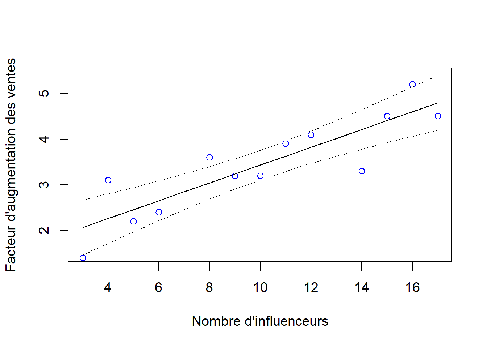
Figure 10.6: Droite de régression avec limites de confiance à 95 % en pointillés et valeurs observées.
Dans le reste du document, nous développons un autre exemple complet de régression linéaire afin d’appliquer les notions que nous avons apprises.
Nous voulons déterminer si le prix de tablettes de chocolat (en dollars australiens) dépend de la masse en grammes de la tablette de chocolat. Une série de différentes tablettes de chocolat, toutes de différentes marques, ont été sélectionnées. Le fichier chocolats.txt contient ces données.
## Masse Prix
## Dark.Bounty 50 0.88
## Bounty 50 0.88
## Milo.Bar 40 1.15
## Viking 80 1.54
## KitKat.White 45 1.15
## KitKat.Chunky 78 1.40##graphique des données
par(cex = 1.2)
plot(chocs$Prix ~ chocs$Masse, ylab = "Prix (dollars australiens)",
xlab = "Masse (g)")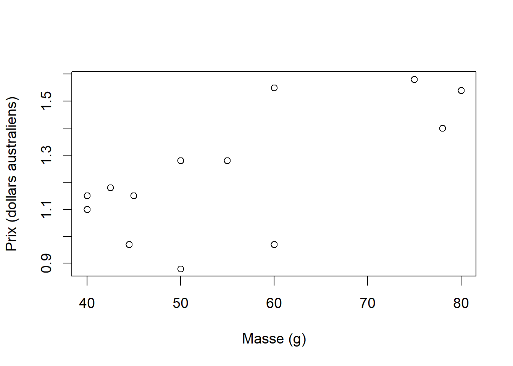
Figure 10.7: Graphique du prix de tablettes de chocolat australiennes en fonction de leur masse.
Nous voyons qu’une relation linéaire entre ces deux variables est plausible (Figure 10.7).
Nous pouvons essayer d’ajuster la régression linéaire aux données.
m.chocs <- lm(Prix ~ Masse, data = chocs)
##vérifications des suppositions
par(mfrow = c(1, 2), cex = 1.2)
plot(rstudent(m.chocs) ~ fitted(m.chocs),
ylab = "Résidus de Student",
xlab = "Valeurs prédites",
main = "Homogénéité des variances", cex.main = 1)
text(y = 1.5, x = 1.025, labels = "a")
qqnorm(rstudent(m.chocs), ylab = "Quantiles observés",
xlab = "Quantiles théoriques",
main = "Normalité des résidus", cex.main = 1)
qqline(rstudent(m.chocs))
text(y = 1.5, x = -1.9, labels = "b")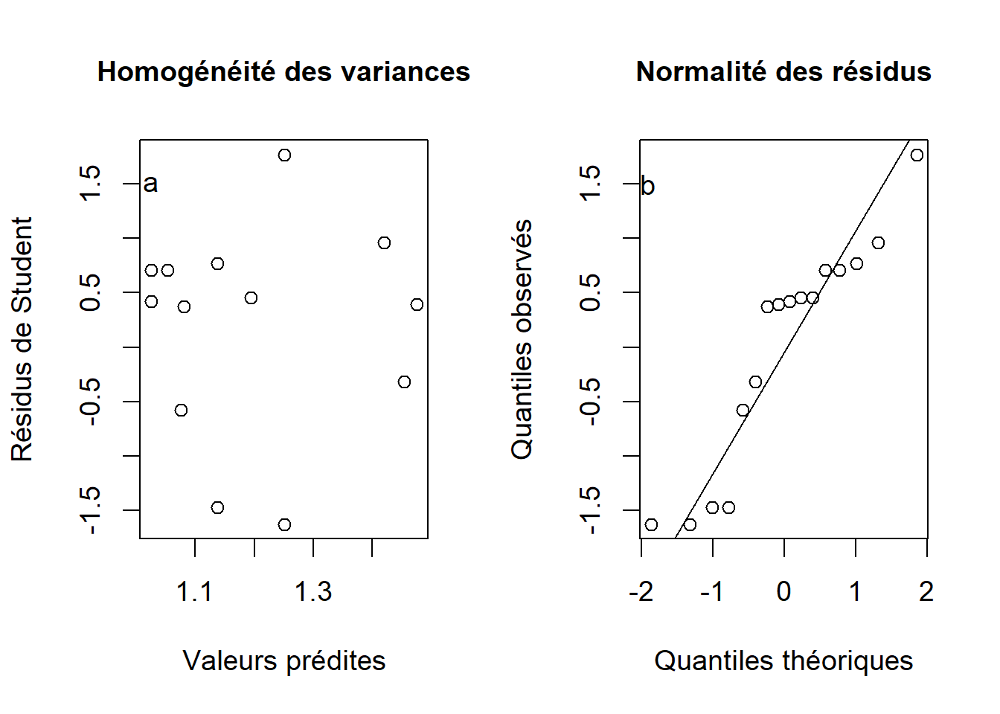
Figure 10.8: Diagnostics des suppositions d’homogénéité des variances (a) et de normalité des résidus (b).
Les graphiques diagnostiques montrent que les variances sont sensiblement homogènes et que les résidus suivent approximativement une distribution normale (Figure 10.8). Puisque nous avons utilisé les résidus de Student, nous avons pu confirmer du même coup l’absence de valeurs extrêmes dans la figure 10.8a).
La fonction summary( ) indique :
##
## Call:
## lm(formula = Prix ~ Masse, data = chocs)
##
## Residuals:
## Min 1Q Median 3Q Max
## -0.28031 -0.14368 0.07184 0.12546 0.29969
##
## Coefficients:
## Estimate Std. Error t value Pr(>|t|)
## (Intercept) 0.574368 0.213738 2.687 0.01769 *
## Masse 0.011266 0.003768 2.989 0.00975 **
## ---
## Signif. codes: 0 '***' 0.001 '**' 0.01 '*' 0.05 '.' 0.1 ' ' 1
##
## Residual standard error: 0.1891 on 14 degrees of freedom
## Multiple R-squared: 0.3896, Adjusted R-squared: 0.346
## F-statistic: 8.937 on 1 and 14 DF, p-value: 0.009753Nous concluons que la masse augmente significativement le prix de tablettes de chocolat en Australie avec une pente de 0.011 et un intervalle de confiance à 95 % de \((0.003, 0.019)\). La masse explique 39 % de la variance du prix, ce qui est satisfaisant avec ce type de données. Dans R, nous pouvons déterminer ces quantités de la façon suivante :
##extraction de la pente et du degré de liberté
##des résidus à partir de l'objet m.chocs
pente <- m.chocs$coefficients[2]
df.res <- m.chocs$df.residual
##extraction du SE de la pente à partir de l'objet
##summary(m.chocs)
SE.pente <- summary(m.chocs)$coefficient[2,2]
##Calcul de l'IC de la pente à 95%
inf95 <- pente + qt(p = 0.025, df = df.res) * SE.pente
sup95 <- pente - qt(p = 0.025, df = df.res) * SE.pente
c(inf95, sup95)## Masse Masse
## 0.003183133 0.019348192## [1] 0.3896299Nous pouvons présenter la droite de régression avec un intervalle de confiance à 95 % (Figure 10.9).
##jeu de données à partir duquel on fait des prédictions
jeu.pred <- data.frame(Masse = seq(from = min(chocs$Masse),
to = max(chocs$Masse),
by = 1))
##on effectue la prédiction avec SE
pred <- predict(m.chocs, newdata = jeu.pred, se.fit = TRUE)
##ajout à jeu.pred
jeu.pred$fit <- pred$fit
jeu.pred$se.fit <- pred$se.fit
##on calcule IC à 95 %
jeu.pred$inf95 <- jeu.pred$fit +
qt(p = 0.025, df = m.chocs$df.residual) * jeu.pred$se.fit
jeu.pred$sup95 <- jeu.pred$fit -
qt(p = 0.025, df = m.chocs$df.residual) * jeu.pred$se.fit
##graphique avec points originaux
par(cex = 1.2)
plot(chocs$Prix ~ chocs$Masse,
ylab = "Prix (dollars australiens)",
xlab = "Masse (g)", col = "blue",
ylim = c(min(jeu.pred$inf95), max(jeu.pred$sup95)))
##on ajoute la droite
lines(y = jeu.pred$fit, x = jeu.pred$Masse)
##on ajoute les limites de confiance
lines(y = jeu.pred$inf95, x = jeu.pred$Masse, lty = "dotted")
lines(y = jeu.pred$sup95, x = jeu.pred$Masse, lty = "dotted")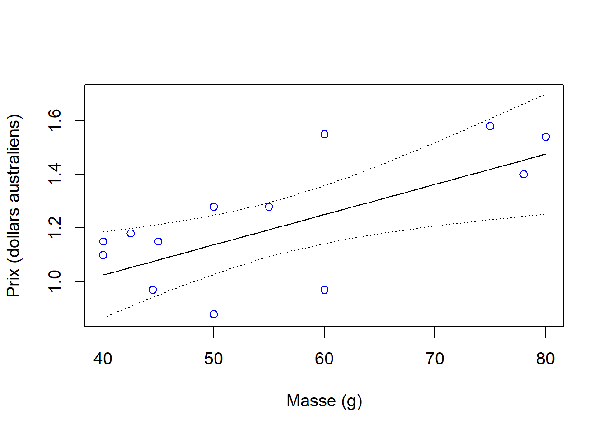
Figure 10.9: Droite de régression et limites de confiance à 95 % (pointillés) à partir de l’analyse du prix en fonction de la masse de tablettes de chocolat australiennes et valeurs observées.
10.1.2 Corrélation
La corrélation est une relation d’association entre deux variables. Contrairement à la régression, il n’y a aucune allusion à une relation de cause à effet avec la corrélation. En d’autres mots, on ne distingue pas entre variable dépendante (\(y\)) et indépendante (\(x\)) – les deux variables varient en même temps et une troisième variable peut potentiellement agir sur les deux. Pour distinguer entre la régression et la corrélation, considérons un exemple où on veut expliquer le nombre moyen de verres cassés par jour dans des restaurants d’une ville selon le nombre de clients. Si le nombre de clients influence le nombre de verres cassés, nous aurons un cas de régression linéaire. À l’opposé, si on mesure le nombre moyen de verres cassés par jour dans des restaurants d’une ville et la quantité de déchets dans les rues autour de ces restaurants, la relation entre les deux variables serait plutôt une corrélation, et cette corrélation pourrait être expliquée par une troisième variable qui influencent les deux premières variables, c.-à-d. la densité de population ou le nombre de clients.
10.1.2.1 Corrélation de Pearson
Le coefficient de corrélation de Pearson (Pearson’s product-moment correlation coefficient) nous donne la corrélation entre deux variables30:
\[r = \frac{SSXY}{\sqrt{SSX \cdot SSY}}\]
où \(SSXY\), \(SSX\) et \(SSY\) sont les mêmes termes que l’on calcule dans la régression. La figure 10.10 présente différents degrés de corrélation positive, alors que la figure 10.11 illustre des corrélations négatives.
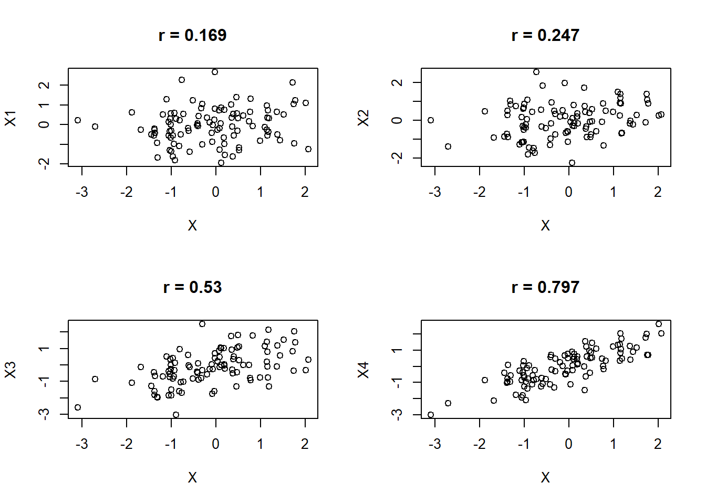
Figure 10.10: Différents degrés de corrélation positive (\(r > 0\)) entre deux variables.
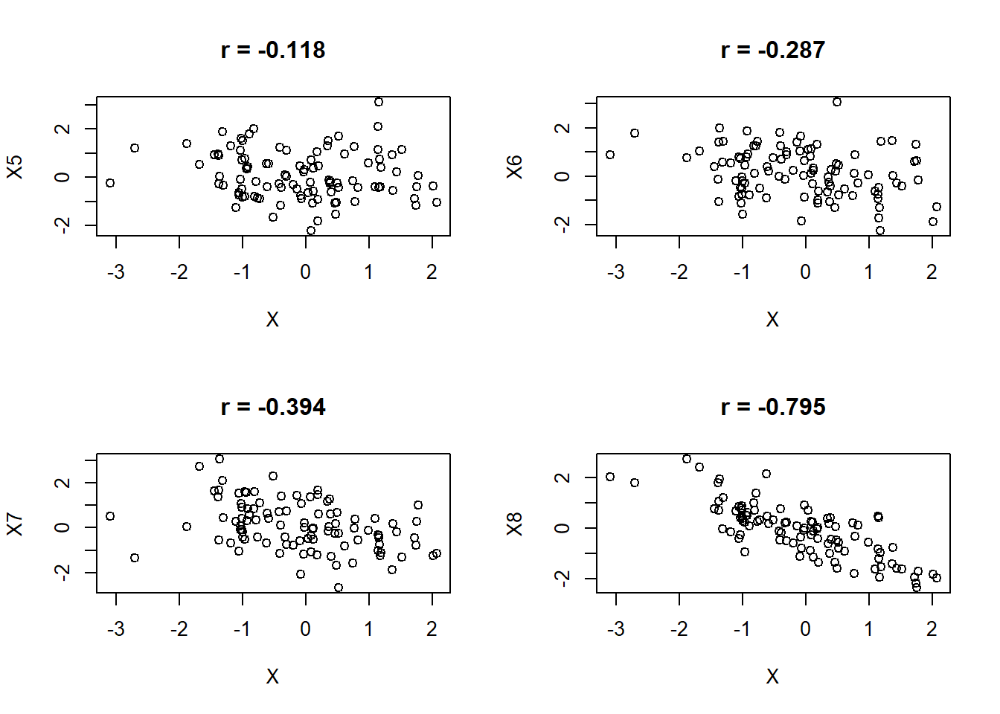
Figure 10.11: Différents degrés de corrélation négative (\(r < 0\)) entre deux variables.
Dans R, on peut obtenir la corrélation de Pearson entre deux variables à l’aide de la fonction cor( ). Nous pouvons aussi effectuer un test d’hypothèse sur le coefficient de corrélation, à savoir s’il diffère de 0 (\(H_0: \rho = 0\)) avec la fonction cor.test( ). Néanmoins, il faut demeurer vigilant car une valeur de \(P\) faible n’est pas une garantie que la corrélation est forte. Une meilleure mesure s’avère le \(r^2\) (c.-à-d., le coefficient de Pearson au carré) et est en fait le coefficient de détermination. Dans le cas d’une corrélation, il indique le pourcentage de la variation d’une variable qui est associée à la deuxième variable.
Dans ce petit exemple, nous montrons le coefficient de corrélation entre deux variables aléatoires ainsi que le test d’hypothèse sur ce coefficient.
##on crée deux variables aléatoires
set.seed(seed = 10)
x1 <- rnorm(1000)
set.seed(seed = 11)
x2 <- rnorm(1000)
##corrélation
cor(x1, x2)## [1] -0.0710729##
## Pearson's product-moment correlation
##
## data: x1 and x2
## t = -2.251, df = 998, p-value = 0.0246
## alternative hypothesis: true correlation is not equal to 0
## 95 percent confidence interval:
## -0.132482263 -0.009120001
## sample estimates:
## cor
## -0.0710729## [1] 0.005051357Chaque variable comporte 1000 valeurs et la corrélation de Pearson donne -0.071. Malgré cette faible corrélation, le test d’hypothèse rejette l’hypothèse nulle principalement en raison de l’énorme taille d’échantillon. Le \(r^2\) est aussi très faible (0.005), indiquant que seulement 0.5% de la variabilité de \(x1\) est associée à \(x2\). Nous conclurons que la corrélation est très faible et qu’à toute fin pratique, il n’y a pas d’association entre les deux variables (pas d’effet pratique).
10.1.3 Corrélation vs régression
La régression est souvent utilisée pour des études d’observation. Dans de telles conditions, une relation de cause à effet peut difficilement être établie sans avoir contrôlé les autres variables ou avoir mesuré toutes les variables pertinentes. Il faut faire attention à l’interprétation et les résultats peuvent suggérer le besoin de réaliser des expériences plus formelles. Les mêmes conseils de plan d’échantillonnage de l’ANOVA s’appliquent à la régression (e.g., randomisation, sélection aléatoire des unités expérimentales, répartition spatiale). La corrélation est surtout utilisée pour déterminer l’association entre deux variables sans être une relation de cause à effet. La corrélation est utile surtout dans la phase de préanalyse pour déterminer les relations entre différentes variables explicatives.
10.1.4 Conclusion
Cette leçon a présenté la régression linéaire simple, les suppositions et conditions nécessaires à son application, l’interprétation et la présentation des résultats. Nous avons vu les tests d’hypothèses associés aux coefficients de la régression ainsi que l’utilisation d’intervalles de confiance comme mesure de précision autour des coefficients et des valeurs prédites. Nous avons également présenté la corrélation linéaire et nous l’avons comparé à la régression linéaire simple.
Rappel: la somme des carrés des erreurs s’obtient avec l’équation \(SSE = \sum_{i=1}^n (y_i - \hat{y}_i)^2\), où \(y_i\) correspond aux observations de la variable réponse et \(\hat{y}_i\) représente les valeurs prédites par l’équation de régression.↩︎
Dans le cas de certaines relations comme une relation exponentielle, transformer la variable réponse à l’échelle log peut linéariser la relation. Si le patron est plutôt quadratique (p. ex., une courbe avec un optimum), on peut aussi considérer un terme quadratique dans l’équation, c’est-à-dire, utiliser une régression polynomiale avec variable \(x + x^2\)↩︎
Il existe aussi des analogues non-paramétriques de la corrélation, tels que la corrélation de Spearman ou de Kendall.↩︎